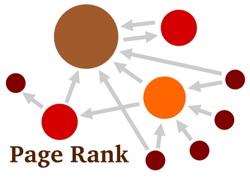

Git Insights Project
A source code analyzer to extract semantics and structure from git projects
by Martin Boyanov
Ideas
- Extract dependency tree and run Pagerank and/or other graph algorithms
- Tokenize and index the source code
- Tokenize and index the git commit messages
Dependency Tree

- On package level?
- On class level?
- On method level?
Tokenize and index source code
- Use the variable, method and class names to get some semantics out of the individual documents.
- Lots of stopwords...
- What is a document?
Tokenize and index git logs
- git commit messages can be pretty informative and suggest what the code actually does and why it was written
- Some teams use labels and urls that link to documentation
- Commit messages are written by a single person - we could track code ownership by author
- Eventually we could classify developers by type
Thank you
Commit early, commit often. A tip for version controlling - not for relationships
Themes
Reveal.js comes with a few themes built in:
Sky -
Beige -
Simple -
Serif -
Default
* Theme demos are loaded after the presentation which leads to flicker. In production you should load your theme in the <head> using a <link>.